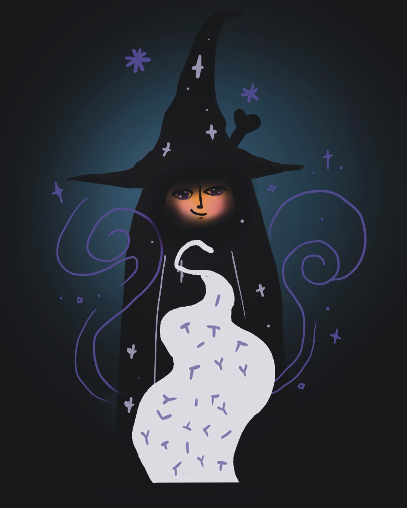

🔊 音量開啟

ARE YOU
THE CHOSEN ONE?
THE CHOSEN ONE?

接下來發生的事，請不要告訴別人
STEP 2 / 4
舉起食指 Raise your index finger
STEP 3 / 4
輕觸臉頰 Touch your cheek
STEP 4 / 4
〜 〜
⌣
DID YOU SEE THE MOST
BEAUTIFUL SMILE?
BEAUTIFUL SMILE?
留言你看到的畫面
↓
標記一位也該找到
魔法微笑的人 ✨
魔法微笑的人 ✨